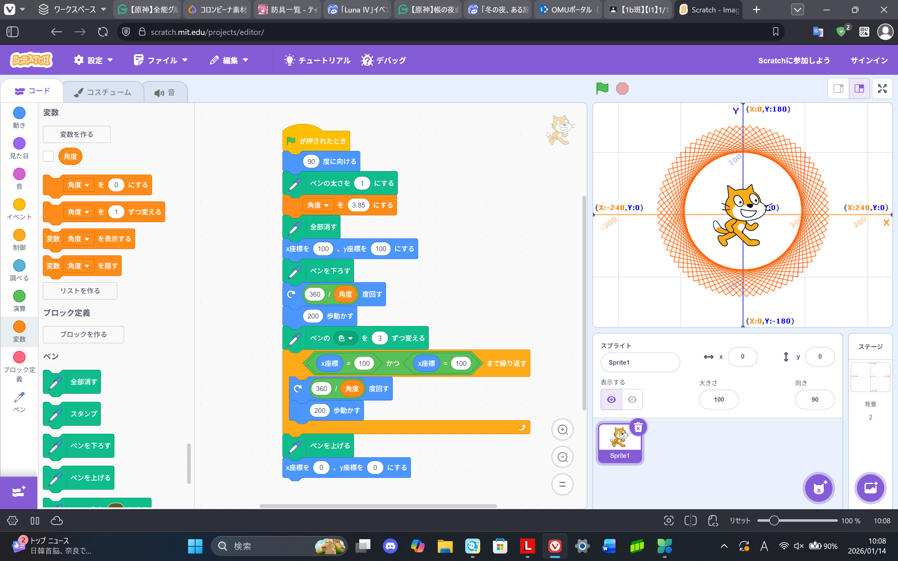
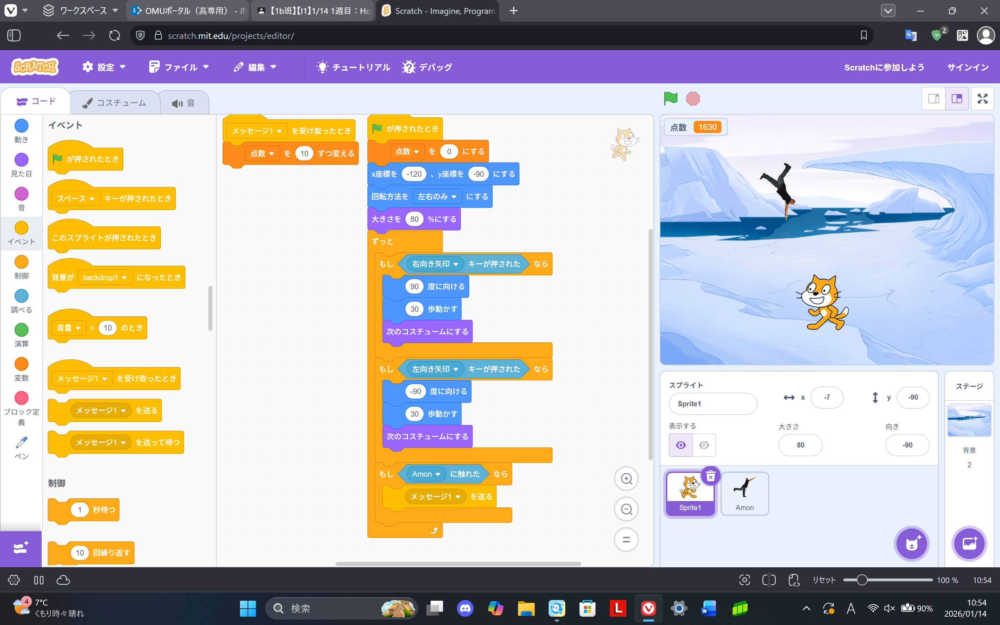

1週目のレポート ： 公大高専１年実習I-1
4班29番 丹羽啓文
第1週目
1-1 サイエンスアート

1.内容
プログラムを開始すると猫が90°を向く。そして、既に引かれている線を全て消す。
それからペンの太さを1に設定し、線を引き始める。全ての線を引き終わったら(0,0)に移動する。
2.感想
スクラッチできれいな模様を作ることができるとは知らなかったので、今回作ることができて楽しかった。
そして、スクラッチで他にもいろいろな模様を作りたいと感じた。
1-2 ゲーム

1.内容
プログラムを開始すると猫の座標を(-120,-90)にする。
そして、猫を操作し落ちてくるものを触れるとメッセージ1を送り、それを受け取ると点数が10増える。
2.感想
スクラッチでゲームを作るのは初めてだったので、少し難しかった。
だけど、完成したプログラムで遊ぶことができて楽しかった。
1-3 ホームページ作成
私のホームページ
1.内容
githubを使ってホームページを作成した。
書かれているコードを間違えて消さないように気を付けて、文章を書き換えた。
2.感想
自分でホームページの編集をするのは初めてだったので難しかった。
だけど、コードを編集して実際にホームページ上の文章が変わっているのを見ると感動した。
各ページへのリンク
1週目のレポート
2週目のレポート
3週目のレポート
私のホームページ